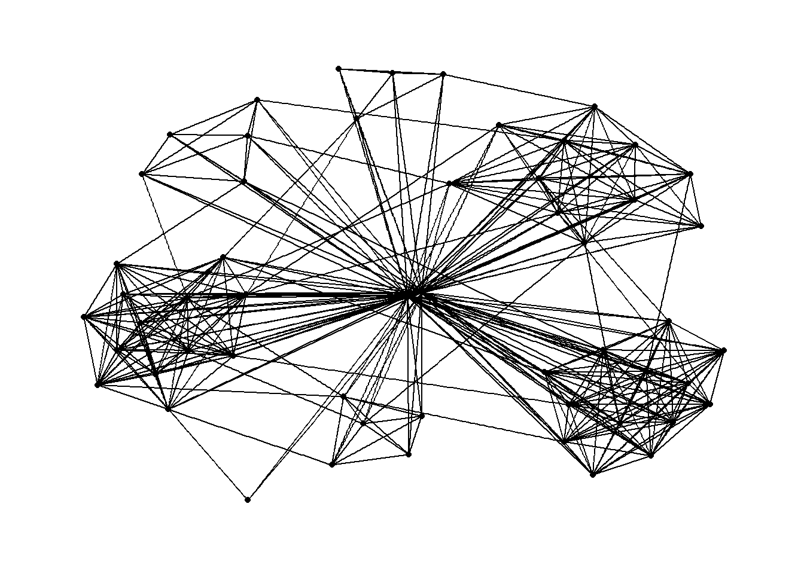
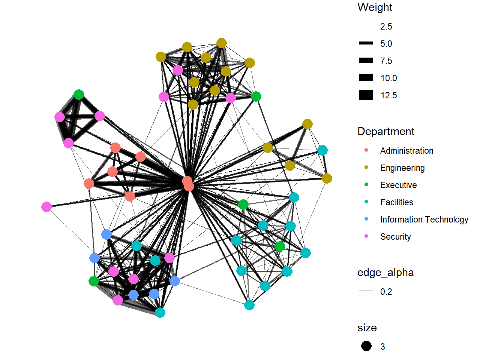
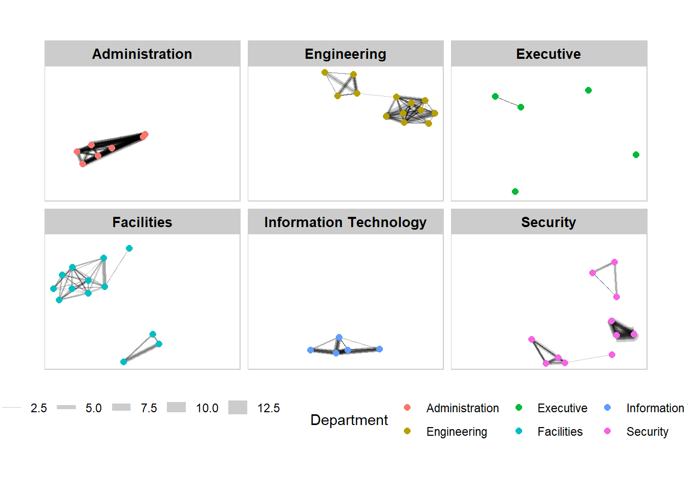
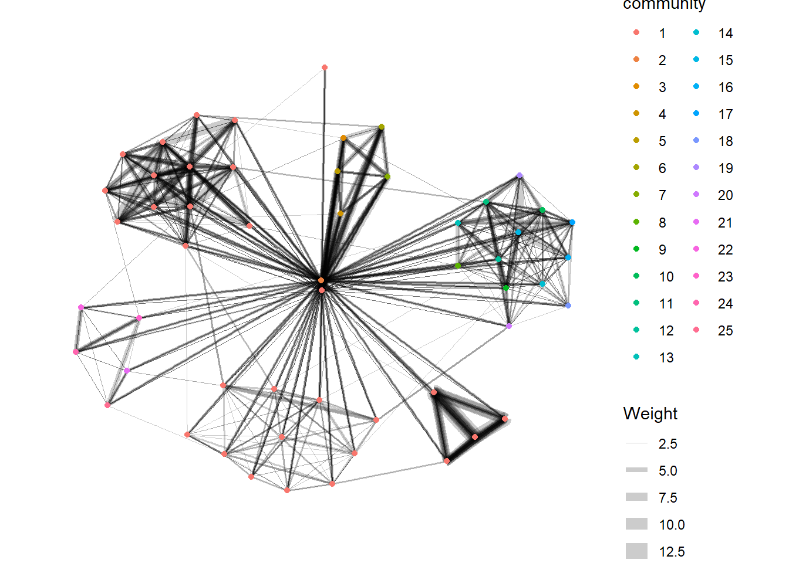

pacman::p_load(igraph, tidygraph, ggraph, visNetwork, lubridate,
clock, tidyverse, graphlayouts)Hands-on Exercise 5
Modelling, Visualising and Analysing Network Data with R
1 Overview
In this hands-on exercise, we will learn to model, analyse and visualise network data using R. By the end of this hands-on exercise, we will be able to:
- create graph object data frames, manipulate them using appropriate functions of dplyr, lubridate, and tidygraph,
- build network graph visualisation using appropriate functions of ggraph,
- compute network geometrics using tidygraph,
- build advanced graph visualisation by incorporating the network geometrics, and
- build interactive network visualisation using visNetwork package.
2 Getting Started
2.1 Install and Launch R Packages
In this hands-on exercise, four network data modelling and visualisation packages will be used. They are igraph, tidygraph, ggraph and visNetwork. Beside these four packages, tidyverse and lubridate, an R package specially designed to handle and wrangling time data will be installed and launched too.
2.2 Import Data
The datasets used in this hands-on exercise are from an oil exploration and extraction company. There are two data sets. One contains the nodes data and the other contains the edges (also know as link) data.:
- Edges Data: GAStech-email_edges.csv which consists of two weeks of 9063 emails correspondances between 55 employees
- Nodes Data: GAStech_email_nodes.csv which consist of the names, department and title of the 55 employees
The following code chunk imports the edges and node data into RStudio environment by using read_csv() of readr package.
gastech_nodes <- read_csv("data/GAStech_email_node.csv")
gastech_edges <- read_csv("data/GAStech_email_edge-v2.csv")2.2.1 Reviewing the imported data
Next, we will examine the structure of the dataframe using glimpse() of dplyr.
glimpse(gastech_edges)Rows: 9,063
Columns: 8
$ source <dbl> 43, 43, 44, 44, 44, 44, 44, 44, 44, 44, 44, 44, 26, 26, 26…
$ target <dbl> 41, 40, 51, 52, 53, 45, 44, 46, 48, 49, 47, 54, 27, 28, 29…
$ SentDate <chr> "6/1/2014", "6/1/2014", "6/1/2014", "6/1/2014", "6/1/2014"…
$ SentTime <time> 08:39:00, 08:39:00, 08:58:00, 08:58:00, 08:58:00, 08:58:0…
$ Subject <chr> "GT-SeismicProcessorPro Bug Report", "GT-SeismicProcessorP…
$ MainSubject <chr> "Work related", "Work related", "Work related", "Work rela…
$ sourceLabel <chr> "Sven.Flecha", "Sven.Flecha", "Kanon.Herrero", "Kanon.Herr…
$ targetLabel <chr> "Isak.Baza", "Lucas.Alcazar", "Felix.Resumir", "Hideki.Coc…
Note
The output report of gastech_edges above reveals that the SentDate is treated as "Character" data type instead of date data type. This is an error! Before we continue, it is important for us to change the data type of SentDate field to "Date" data type.
2.2.2 Wrangling time
We will wrangle the date fields using functions from lubridate in the code chunk below.
gastech_edges <- gastech_edges %>%
mutate(SendDate = dmy(SentDate)) %>%
mutate(Weekday = wday(SentDate, label = TRUE, abbr = FALSE))
Things to learn from code
- both dmy() and wday() are functions of lubridate package. lubridate is an R package that makes it easier to work with dates and times.
- dmy() transforms the SentDate to Date data type.
- wday() returns the day of the week as a decimal number or an ordered factor if label is TRUE. The argument abbr is FALSE keep the daya spells in full, i.e. Monday. The function will create a new column in the data.frame i.e. Weekday and the output of wday() will save in this newly created field.
- the values in the Weekday field are in ordinal scale.
2.2.3 Wrangling attributes
A close examination of gastetch_edges reveals that it consists of individual email flow records. This is not very useful for visualisation. Instead, we will aggregate the individual links by date, senders, receivers, main subject and day of the week.
gastech_edges_agg <- gastech_edges %>%
filter(MainSubject == "Work related") %>%
group_by(source, target, Weekday) %>%
summarise(Weight = n()) %>%
filter(source!=target) %>% ## remove those where they send to themselves
filter(Weight>1) %>%
ungroup()
Things to learn from code
- four functions from dplyr package are used. They are: filter(), group(), summarise(), and ungroup()
- A new field called Weight has been added in gastech_edges_agg
We will take a look at the revised data structure below.
glimpse(gastech_edges_agg)Rows: 1,372
Columns: 4
$ source <dbl> 1, 1, 1, 1, 1, 1, 1, 1, 1, 1, 1, 1, 1, 1, 1, 1, 1, 1, 1, 1, 1,…
$ target <dbl> 2, 2, 2, 2, 2, 3, 3, 3, 3, 3, 4, 4, 4, 4, 4, 5, 5, 5, 5, 5, 6,…
$ Weekday <ord> Sunday, Monday, Tuesday, Wednesday, Friday, Sunday, Monday, Tu…
$ Weight <int> 5, 2, 3, 4, 6, 5, 2, 3, 4, 6, 5, 2, 3, 4, 6, 5, 2, 3, 4, 6, 5,…3 Creating network objects using tidygraph
In this section, we will learn how to create a graph data model using tidygraph package. It provides a tidy API for graph/network manipulation. While network data itself is not tidy, it can be envisioned as two tidy tables, one for node data and one for edge data. tidygraph provides a way to switch between the two tables and provides dplyr verbs for manipulating them. Furthermore it provides access to a lot of graph algorithms with return values that facilitate their use in a tidy workflow.
The following two articles provide more information on tidygraph:
3.1 The tbl_graph object
Two functions of tidygraph package can be used to create network objects, they are:
tbl_graph()creates a tbl_graph network object from nodes and edges dataas_tbl_graph()converts network data and objects to a tbl_graph network. Below are network data and objects supported byas_tbl_graph()a node data.frame and an edge data.frame,
data.frame, list, matrix from base,
igraph from igraph,
network from network,
dendrogram and hclust from stats,
Node from data.tree,
phylo and evonet from ape, and
graphNEL, graphAM, graphBAM from graph (in Bioconductor).
3.2 The dplyr verbs in tidygraph
activate()verb from tidygraph serves as a switch between tibbles for nodes and edges. It takes a single argument specifying the part of the data that should be targeted for subsequent operations such that all subsequent dplyr verbs applied to tbl_graph object are applied to the active tibble

- In the above the .N() function is used to gain access to the node data while manipulating the edge data. Similarly .E() will give you the edge data and .G() will give you the tbl_graph object itself
3.3 Using tbl_graph() to build tidygraph data model
In this section, we will use tbl_graph() of tidygraph package to build an tidygraph's network graph data.frame. More details are available in the reference guide of tbl_graph().
gastech_graph <- tbl_graph(nodes = gastech_nodes,
edges = gastech_edges_agg,
directed = TRUE)We will review the output tidygraph object in the following.
gastech_graph# A tbl_graph: 54 nodes and 1372 edges
#
# A directed multigraph with 1 component
#
# A tibble: 54 × 4
id label Department Title
<dbl> <chr> <chr> <chr>
1 1 Mat.Bramar Administration Assistant to CEO
2 2 Anda.Ribera Administration Assistant to CFO
3 3 Rachel.Pantanal Administration Assistant to CIO
4 4 Linda.Lagos Administration Assistant to COO
5 5 Ruscella.Mies.Haber Administration Assistant to Engineering Group Manag…
6 6 Carla.Forluniau Administration Assistant to IT Group Manager
# ℹ 48 more rows
#
# A tibble: 1,372 × 4
from to Weekday Weight
<int> <int> <ord> <int>
1 1 2 Sunday 5
2 1 2 Monday 2
3 1 2 Tuesday 3
# ℹ 1,369 more rows- The output above reveals that GAStech_graph is a tbl_graph object with 54 nodes and 4541 edges.
- The command also prints the first six rows of "Node Data" and the first three of "Edge Data".
- It states that the Node Data is active. The notion of an active tibble within a tbl_graph object makes it possible to manipulate the data in one tibble at a time.
3.4 Changing the active object
The nodes tibble data frame is activated by default, but we can change which tibble data frame is active with the activate() function. Thus, if we wanted to rearrange the rows in the edges tibble to list those with the highest "weight" first, we could use activate() and then arrange().
gastech_graph %>% activate(edges) %>%
arrange(desc(Weight))# A tbl_graph: 54 nodes and 1372 edges
#
# A directed multigraph with 1 component
#
# A tibble: 1,372 × 4
from to Weekday Weight
<int> <int> <ord> <int>
1 40 41 Saturday 13
2 41 43 Monday 11
3 35 31 Tuesday 10
4 40 41 Monday 10
5 40 43 Monday 10
6 36 32 Sunday 9
# ℹ 1,366 more rows
#
# A tibble: 54 × 4
id label Department Title
<dbl> <chr> <chr> <chr>
1 1 Mat.Bramar Administration Assistant to CEO
2 2 Anda.Ribera Administration Assistant to CFO
3 3 Rachel.Pantanal Administration Assistant to CIO
# ℹ 51 more rowsVisit the reference guide of activate() to find out more about the function.
4 Plotting Static Network Graphs with ggraph package
ggraph is an extension of ggplot2, making it easier to carry over basic ggplot skills to the design of network graphs. As in all network graph, there are three main aspects to a ggraph's network graph, they are:
4.1 Plotting a basic network graph
The code chunk below uses ggraph(), geom_edge_link() and geom_node_point() to plot a network graph by using gastech_graph.
ggraph(gastech_graph) +
geom_edge_link() +
geom_node_point()
Things to learn from code
- The basic plotting function is
ggraph(), which takes the data to be used for the graph and the type of layout desired. Both of the arguments forggraph()are built around igraph. Therefore,ggraph()can use either an igraph object or a tbl_graph object geom_node_point()is equivalent in functionality toggplot2::geom_point()and allows for simple plotting of nodes in different shapes, colours and sizesgeom_edge_link()draws edges as straight lines between the start and end nodes
4.2 Changing the default network graph theme
We can use use theme_graph() to change the network graph theme. In the below example, we will remove the x and y axes.
g <- ggraph(gastech_graph) +
geom_edge_link(aes()) +
geom_node_point(aes())
g + theme_graph()
Things to learn from code
- ggraph introduces a special ggplot theme that provides better defaults for network graphs than the normal ggplot defaults.
theme_graph(), besides removing axes, grids, and border, changes the font to Arial Narrow (this can be overridden). - The ggraph theme can be set for a series of plots with the
set_graph_style()command run before the graphs are plotted or by usingtheme_graph()in the individual plots.
4.3 Changing the colouring of the plot
Furthermore, theme_graph() makes it easy to change the coloring of the plot.
g <- ggraph(gastech_graph) +
geom_edge_link(aes(colour = 'grey50')) +
geom_node_point(aes(colour = 'grey40'))
g + theme_graph(background = 'grey10',
text_colour = 'white')
4.4 Working with ggraph’s layouts
ggraph support many layout for standard used, they are: star, circle, nicely (default), dh, gem, graphopt, grid, mds, spahere, randomly, fr, kk, drl and lgl. Figures below and on the right show layouts supported by ggraph().

4.4.1 Fruchterman and Reingold layout
The code chunks below will be used to plot the network graph using Fruchterman and Reingold layout. We can specify the layout to use using the layout argument.
g <- ggraph(gastech_graph, layout = "fr") +
geom_edge_link(aes()) +
geom_node_point(aes())
g + theme_graph()
4.5 Modifying network nodes
We can colour each node by referring to their respective departments.
g <- ggraph(gastech_graph, layout = "nicely") +
geom_edge_link(aes()) +
geom_node_point(aes(colour = Department,
size = 3))
g + theme_graph()
Things to learn from code
geom_node_point is equivalent in functionality to geo_point of ggplot2. It allows for simple plotting of nodes in different shapes, colours and sizes. In the codes chunks above, colour and size are used
4.6 Modifying edges
In the code chunk below, the thickness of the edges will be mapped to the Weight variable.
g <- ggraph(gastech_graph, layout='nicely') +
geom_edge_link(aes(width=Weight, alpha=0.2)) +
scale_edge_width(range = c(0.1,5)) +
geom_node_point(aes(colour=Department, size=3))
g + theme_graph()
Things to learn from code
geom_edge_link draws edges in the simplest way - as straight lines between the start and end nodes. But, it can do more that that. In the example above, argument width is used to map the width of the line in proportional to the Weight attribute and argument alpha is used to introduce opacity on the line
4.7 Creating facet graphs
Another very useful feature of ggraph is faceting. In visualising network data, this technique can be used to reduce edge over-plotting in a meaningful way by spreading nodes and edges out based on their attributes. In this section, we will learn how to use faceting technique to visualise network data.
There are three functions in ggraph to implement faceting, they are:
- facet_nodes() whereby edges are only draw in a panel if both terminal nodes are present here,
- facet_edges() whereby nodes are always drawn in all panels even if the node data contains an attribute named the same as the one used for the edge facetting, and
- facet_graph() faceting on two variables simultaneously.
4.7.1 Working with facet_edges()
In the code chunk below, facet_edges() is used. The nodes are repeated in every panel but the edges are only drawn for the relevant facet.
Additionally, we can make modications to the theme as follows:
- Use
theme()to change the position of the legend - Use
th_foreground()and set border argument to TRUE to add frame to each graph
set_graph_style()
g <- ggraph(gastech_graph, layout = 'nicely') +
geom_edge_link(aes(width = Weight),
alpha = 0.2) +
scale_edge_width(range = c(0.1, 5)) +
geom_node_point(aes(colour = Department),
size = 2)
g + facet_edges(~Weekday) +
th_foreground(foreground = 'grey80',
border = TRUE) +
theme(legend.position = "bottom")4.7.2 Working with facet_nodes()
In the following, we will use facet_nodes(). The nodes only appear in the relevant panel and edges are drawn if their terminal nodes are both present in the panel.
set_graph_style()
g <- ggraph(gastech_graph,
layout = "nicely") +
geom_edge_link(aes(width=Weight),
alpha=0.2) +
scale_edge_width(range = c(0.1, 5)) +
geom_node_point(aes(colour = Department),
size = 2)
g + facet_nodes(~Department) +
th_foreground(foreground = 'grey80',
border = TRUE) +
theme(legend.position = "bottom")
5 Network Metrics Analysis
5.1 Centrality indices
Centrality measures are a collection of statistical indices use to describe the relative important of the actors are to a network. There are four well-known centrality measures, namely: degree, betweenness, closeness and eigenvector. For deeper understanding of the principles and mathematics behind these measures, we can refer to Chapter 7: Actor Prominence of A User's Guide to Network Analysis in R.
5.2 Visualising network metrics
In the below code chunk, we can compute betweenness centrality using centrality_betweenness() of tidygraph and plot the node sizes based on the betweenness centrality.
g <- gastech_graph %>%
mutate(betweenness_centrality = centrality_betweenness()) %>%
ggraph(layout = 'fr') +
geom_edge_link(aes(width = Weight, alpha = 0.2)) +
scale_edge_width(range = c(0.1, 5)) +
geom_node_point(aes(colour = Department,
size = betweenness_centrality))
g +theme_graph()From ggraph v2.0 onwards tidygraph algorithms such as centrality measures can be accessed directly in ggraph calls. This means that it is no longer necessary to precompute and store derived node and edge centrality measures on the graph in order to use them in a plot.
g <- gastech_graph %>%
ggraph(layout = 'fr') +
geom_edge_link(aes(width=Weight),
alpha=0.2) +
scale_edge_width(range = c(0.1, 5)) +
geom_node_point(aes(colour = Department,
size = centrality_betweenness()))
g + theme_graph()5.3 Visualising Community
tidygraph package inherits many of the community detection algorithms imbedded into igraph and makes them available to us, including Edge-betweenness (group_edge_betweenness), Leading eigenvector (group_leading_eigen), Fast-greedy (group_fast_greedy), Louvain (group_louvain), Walktrap (group_walktrap), Label propagation (group_label_prop), InfoMAP (group_infomap), Spinglass (group_spinglass), and Optimal (group_optimal). Some community algorithms are designed to take into account direction or weight, while others ignore it. Use this link to find out more about community detection functions provided by tidygraph.
In the code chunk below group_edge_betweenness() is used. The function groups densely connected nodes using igraph::cluster_edge_betweenness(). The idea of the edge betweenness based community structure detection is that it is likely that edges connecting separate modules have high edge betweenness as all the shortest paths from one module to another must traverse through them. So if we gradually remove the edge with the highest edge betweenness score we will get a hierarchical map, a rooted tree, called a dendrogram of the graph. The leafs of the tree are the individual vertices and the root of the tree represents the whole graph.
g <- gastech_graph %>%
mutate(community = as.factor(group_edge_betweenness(weights = Weight,
directed = TRUE))) %>%
ggraph(layout = 'fr') +
geom_edge_link(aes(width=Weight),
alpha=0.2) +
scale_edge_width(range = c(0.1, 5)) +
geom_node_point(aes(colour = community))
g + theme_graph()
6 Building Interactive Network Graph with visNetwork
- visNetwork() is a R package for network visualization, using vis.js javascript library.
- visNetwork() function uses a nodes list and edges list to create an interactive graph.
- The nodes list must include an "id" column, and the edge list must have "from" and "to" columns.
- The function also plots the labels for the nodes, using the names of the actors from the "label" column in the node list.
- The resulting graph is fun to play around with.
We can move the nodes and the graph will use an algorithm to keep the nodes properly spaced.
We can also zoom in and out on the plot and move it around to re-center it
6.1 Data Preparation
Before we can plot the interactive network graph, we need to prepare the data model by using the code chunk below.
gastech_edges_agg2 <- gastech_edges %>%
left_join(gastech_nodes, by = c('sourceLabel' = 'label')) %>%
rename(from = id) %>%
left_join(gastech_nodes, by = c("targetLabel" = "label")) %>%
rename(to = id) %>%
filter(MainSubject == "Work related") %>%
group_by(from, to) %>%
summarise(weight = n()) %>%
filter(from != to) %>%
filter(weight > 1) %>%
ungroup()Below is a peek at the prepared data.
head(gastech_edges_agg2)# A tibble: 6 × 3
from to weight
<dbl> <dbl> <int>
1 1 2 21
2 1 3 21
3 1 4 21
4 1 5 21
5 1 6 21
6 1 7 216.2 Plotting the first interactive network graph
The code chunk below will be used to plot an interactive network graph using the data prepared.
visNetwork(gastech_nodes, gastech_edges_agg2)6.3 Working with layout
In the code chunk below, Fruchterman and Reingold layout is used.
visNetwork(gastech_nodes, gastech_edges_agg2) %>%
visIgraphLayout(layout = 'layout_with_fr')Visit Igraph to find out more about visIgraphLayout's argument.
6.4 Working with visual attributes - Nodes
visNetwork() looks for a field called "group" in the nodes object and colour the nodes according to the values of the group field.
The code chunk below renames Department field to group.
gastech_nodes <- gastech_nodes %>%
rename(group = Department)When we rerun the code chunk below, visNetwork shades the nodes by assigning unique colour to each category in the group field.
visNetwork(gastech_nodes,
gastech_edges_agg2) %>%
visIgraphLayout(layout = "layout_with_fr") %>%
visLegend() %>%
visLayout(randomSeed = 123)6.5 Working with visual attributes - Edges
In the code run below visEdges() is used to symbolise the edges.
- The argument arrows is used to define where to place the arrow.
- The smooth argument is used to plot the edges using a smooth curve.
visNetwork(gastech_nodes,
gastech_edges_agg2) %>%
visIgraphLayout(layout = 'layout_with_fr') %>%
visEdges(arrows = "to",
smooth = list(enabled = TRUE,
type = "curvedCW")) %>%
visLegend() %>%
visLayout(randomSeed = 123)Visit Option to find out more about visEdges's argument.
6.6 Interactivity
In the code chunk below, visOptions() is used to incorporate interactivity features in the data visualisation.
- The argument highlightNearest highlights nearest when clicking a node.
- The argument nodesIdSelection adds an id node selection creating an HTML select element.
visNetwork(gastech_nodes, gastech_edges_agg2) %>%
visIgraphLayout(layout = 'layout_with_fr') %>%
visOptions(highlightNearest = TRUE,
nodesIdSelection = TRUE) %>%
visLegend() %>%
visLayout(randomSeed = 123)Visit Option to find out more about visOption's argument.